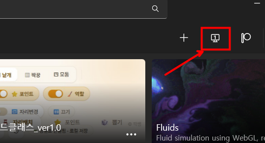
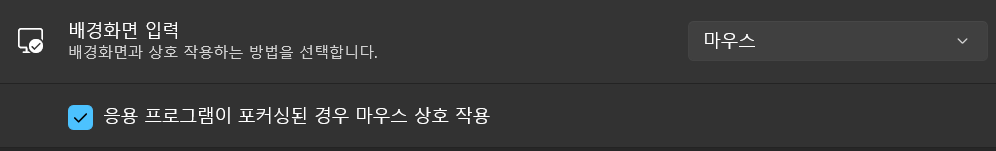
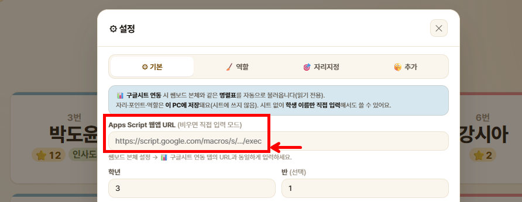
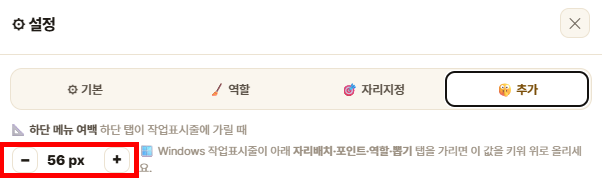
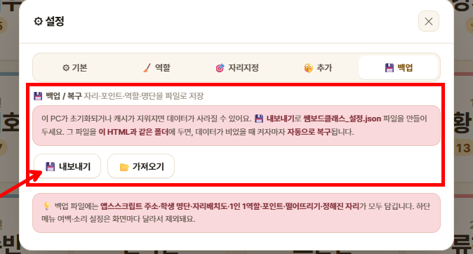

쌤보드 클래스는 학생 자리배치(랜덤·짝꿍·모둠), 칭찬 포인트, 1인 1역할, 학생 뽑기(돌림판·카드·슬롯)까지 교실 운영에 필요한 기능을 한 화면에 모은 도구입니다. 이미 쌤보드(교사용 대시보드)를 쓰고 있다면 그 짝꿍 제품이고, 안 쓰고 있어도 단독으로 전체 기능을 사용할 수 있습니다.
1-1. 나는 어떤 방법으로 써야 할까?
아래 2가지 중 본인 상황에 맞는 것을 먼저 골라보세요. 둘 다 Lively Wallpaper에 파일을 배경으로 등록해서 쓰는 방식이고, 기능은 완전히 같습니다.
🖥️🖥️
듀얼모니터
A. 듀얼모니터 2번째 화면
모니터가 2개라면 1번 화면엔 쌤보드 본체(대시보드), 2번 화면엔 쌤보드 클래스를 각각 배경으로 띄워 항시 보면서 운영할 수 있습니다. Lively에 서로 다른 파일 2개를 각각 등록해요.
🪑
단독 사용
B. 쌤보드 클래스만 단독
대시보드(날씨·캘린더·할일 등)까진 필요 없고 자리배치·포인트·뽑기 기능만 쓰고 싶다면, 쌤보드 클래스 파일 하나만 Lively 배경으로 등록해서 단독으로 사용합니다.
항목
A. 듀얼모니터
B. 단독 사용
Lively 설치 필요?
필요 (파일 2개 등록)
필요 (파일 1개 등록)
모니터 몇 개?
2개 권장
1개도 OK
학생 명단 연동
직접 설정 (4장)
직접 설정 (4장)
이 가이드에서 볼 장
1~14장 전체
1~14장 전체
💡 이미 쌤보드(본체)를 쓰고 있다면
학생 명단을 새로 만들 필요 없이, 4장에서 쌤보드 본체와 같은 구글시트 URL을 그대로 입력하면 명렬표를 그대로 불러옵니다 (읽기 전용이라 본체 데이터에 영향 없음).
1번 모니터에는 쌤보드_ver2.4.html(본체), 2번 모니터에는 쌤보드클래스_ver1.0.html처럼 서로 다른 파일을 등록해야 합니다. 같은 파일을 두 모니터에 등록하면 Lively가 두 인스턴스의 설정값(Customise 값)을 공유하기 때문에, 한쪽을 바꾸면 다른 쪽도 똑같이 바뀌어 화면 분리가 안 됩니다.
📺 모니터별로 다르게 띄우는 순서
Lively 화면 오른쪽 위에 있는 🖥️ 디스플레이(모니터 모양) 아이콘으로 어느 모니터에 적용할지 고릅니다. (아래 사진의 빨간 네모 — [일반] 설정 탭에 따로 안 들어가도 메인 화면에서 바로 보여요.)

1
Lively 화면 오른쪽 위의 🖥️ 디스플레이 아이콘을 클릭해, 배경을 바꿀 모니터(예: 1번)를 선택합니다.
2
그 상태에서 1번 모니터용 파일(쌤보드_ver2.4.html)을 배경으로 적용합니다.
3
다시 🖥️ 디스플레이 아이콘에서 2번 모니터를 선택한 뒤, 쌤보드클래스_ver1.0.html을 적용합니다.
4
이미 등록한 배경이라면, 라이브러리에서 썸네일을 우클릭 → "디스플레이 선택"으로도 적용할 모니터를 바꿀 수 있습니다.
💡 단독 사용이라면 신경 안 써도 돼요
모니터 1개로 쌤보드 클래스만 쓰는 B 경로(단독 사용)라면 이 모니터별 지정 단계는 건너뛰어도 됩니다.
3-3. Lively 권장 설정
마우스 클릭이 씹히는 경우, 설정 패널 [배경화면] 탭 → "응용 프로그램이 포커싱된 경우 마우스 상호 작용"을 체크하세요. (쌤보드 본체와 동일한 설정 — 이미 체크해두었다면 그대로 둡니다.)

3-4. 재시작 후에도 데이터 유지 — 디스크 캐시 ✔ 필수
쌤보드 클래스는 자리배치·포인트·역할을 이 PC에 로컬로 저장합니다. 그런데 Lively가 브라우저 데이터를 메모리에만 두면 PC를 재시작할 때 데이터가 날아갈 수 있어요. 반드시 디스크 캐시를 켜세요.
설정 패널 [배경화면] 탭 → 웹 브라우저 섹션 → "디스크 캐시" 활성화
상태
동작
권장
활성화
브라우저 데이터(캐시·저장소)를 디스크에 보관 → PC 재시작 후에도 자리·포인트·역할 유지
✔ 권장
비활성화
데이터가 메모리에만 남아 재시작 시 사라질 수 있음
✘
💡 이중 안전장치
디스크 캐시를 켜도, 13장의 백업 파일(쌤보드클래스_설정.json)까지 만들어두면 PC 초기화·캐시 삭제 같은 사고에도 안전합니다. 둘 다 설정하는 것을 권장합니다.
이미 쌤보드 본체에서 구글시트를 연동해 쓰고 있다면, 그 URL을 그대로 쌤보드 클래스 설정에도 입력하면 됩니다. 쌤보드 클래스는 시트에서 학생 명렬표만 읽어올 뿐, 어떤 것도 시트에 기록하지 않으므로 Apps Script를 새로 배포하거나 코드를 수정할 필요가 없습니다.
1
쌤보드 클래스 화면에서 ⚙ 설정 버튼을 클릭합니다.
2
⚙ 기본 탭에서 Apps Script URL 입력칸에 쌤보드 본체와 동일한 URL을 붙여넣습니다.
3
학년·반을 입력하고 💾 저장을 누르면 명렬표가 자동으로 불러와집니다.

💡 아직 Apps Script를 배포해본 적이 없다면
쌤보드 본체 가이드의 5장 Apps Script 배포 ★를 먼저 따라 하세요. 거기서 만든 URL을 여기서도 그대로 쓰면 됩니다.
4-3. 직접입력 모드 설정하기
구글시트 없이 바로 쓰고 싶다면, URL 칸을 비워두고 설정 ⚙ 기본 탭의 "학생 직접 입력" textarea에 학생 이름을 한 줄에 한 명씩 입력합니다. 입력 즉시 자리배치 화면에 반영됩니다.
⚠️ 처음 열면 데모(가상) 학생 24명이 보여요
직접 입력 명단도 없고 시트 연동도 안 했다면 정상적으로 가상 학생 24명이 표시됩니다(?demo=1 기본값). 학생을 직접 입력하거나 시트를 연동하면 데모 데이터는 자동으로 사라집니다.
Lively Wallpaper로 배경화면 실행 시, 화면 가장 아래 영역이 Windows 작업표시줄에 가려 하단 🪑⭐🎲 메뉴가 안 보일 수 있습니다. 이때 설정 ⚙ "🤫 추가" 탭 맨 위의 "📐 하단 메뉴 여백" −/＋ 버튼으로 여백을 조절하세요 (기본 56px, 0~160px 범위, 즉시 반영).

💡 이 값은 모니터별로 따로 저장돼요
작업표시줄 가려짐 정도는 화면마다 다를 수 있어서, 하단 여백 값은 동기화되는 데이터가 아니라 그 화면(기기)에만 로컬로 저장됩니다.
12-2. 설정 ⚙ 5탭 한눈에 보기
탭
내용
⚙ 기본
Apps Script URL / 학년·반 / 학생 직접 입력 / 좌석 열·행 수 / 자리·포인트·역할 초기화
쌤보드 클래스는 자리배치·포인트·역할·명단을 이 컴퓨터에만 로컬로 저장합니다 (구글시트는 명단을 읽기만 하고, 공유 설정 시트를 더럽히지 않으려고 자리·포인트는 쓰지 않아요). 그래서 PC를 초기화하거나 브라우저 캐시를 지우면 데이터가 사라질 수 있습니다. 3장의 디스크 캐시 + 이 장의 백업 파일을 둘 다 해두면 안전합니다.
13-1. 백업 파일 만들기 (내보내기)
1
설정 ⚙ → 💾 백업 탭을 엽니다.
2
"💾 내보내기" 버튼을 누르면 쌤보드클래스_설정.json 파일이 저장됩니다. (저장 위치를 물어보면 원하는 폴더 선택, 아니면 다운로드 폴더에 생성)
3
이 파일에는 앱스스크립트 주소 · 학생 명단 · 자리배치도 · 1인 1역할 · 포인트 · 떨어뜨리기 · 정해진 자리가 모두 담깁니다. (하단 메뉴 여백·소리는 화면마다 달라서 제외)

13-2. 자동 복구 — 같은 폴더에 두기 (강력 추천)
방금 만든 쌤보드클래스_설정.json 파일을 쌤보드클래스_ver1.0.html과 같은 폴더에 두세요. 그러면 PC 초기화·캐시 삭제 등으로 로컬 데이터가 비어 있을 때, 배경화면을 켜자마자 이 파일을 읽어 자동으로 복구합니다.
💡 최신본은 절대 안 덮어써요
자동 복구는 로컬에 데이터가 없을 때만 작동합니다. 평소처럼 데이터가 있으면 백업 파일을 건드리지 않으니, 오래된 파일이 최신 자리배치를 덮어쓸 걱정은 없어요. 대신 큰 변경을 한 날에는 다시 내보내기로 파일을 갱신해두면 가장 안전합니다.
13-3. 다른 PC로 옮기거나 되돌리기 (가져오기)
설정 ⚙ → 💾 백업 탭 → "📂 가져오기" 버튼 → 저장해 둔 쌤보드클래스_설정.json 파일을 선택하면 즉시 복원됩니다. 새 컴퓨터로 옮길 때나, 실수로 초기화했을 때 이렇게 되돌리세요.
⚠️ 구글시트로는 백업되지 않아요
쌤보드 본체와 달리, 쌤보드 클래스는 자리·포인트 데이터를 구글시트에 저장하지 않습니다 (공유 설정 시트 오염 방지). 따라서 이 백업 파일이 유일한 백업 수단입니다. 꼭 한 번 만들어 두세요.
네, 가능합니다. 1장 B 경로처럼 쌤보드클래스_ver1.0.html 파일 하나만 Lively 배경으로 등록하면 자리배치·포인트·1인1역할·뽑기 기능을 전부 단독으로 쓸 수 있어요.
듀얼모니터인데 양쪽 화면에 똑같은 게 떠요.
두 모니터에 서로 다른 파일(쌤보드 본체 ≠ 쌤보드 클래스)을 등록해야 합니다. Lively는 같은 파일을 두 모니터에 등록하면 설정값(Customise 값)을 공유하기 때문에 화면별로 다르게 보이게 할 수 없어요. 3장 #3-2를 참고해 두 파일을 각각 등록하세요.
다른 컴퓨터에서 열면 자리·포인트가 안 보여요 / 화면 간 동기화가 안 돼요.
의도된 동작입니다. 쌤보드 클래스는 자리·포인트·역할 데이터를 구글시트에 쓰지 않고 그 컴퓨터에 로컬로만 저장합니다 (공유 설정 시트 오염 방지). 그래서 PC가 다르면 자동으로 공유되지 않아요. 다른 컴퓨터로 옮기려면 13장의 백업 파일(쌤보드클래스_설정.json)을 내보내서 그쪽에서 가져오기 하면 됩니다.
화면을 클릭해도 한 번에 안 눌리고 두 번 눌러야 동작해요.
Lively Wallpaper가 배경화면을 OS 바탕화면 레이어에 띄우는 특성상, 첫 클릭이 "창 활성화"로 소비되고 두 번째 클릭부터 실제로 전달되는 경우가 있습니다. Lively 환경의 알려진 특성이라 더블 클릭이 정상 동작이에요.
하단 🪑⭐🎲 메뉴가 화면 아래로 잘려서 안 보여요.
12장 #12-1의 "📐 하단 메뉴 여백" −/＋ 버튼으로 여백을 늘려보세요. Lively로 실행할 때 Windows 작업표시줄에 가려지는 경우 발생합니다.
뽑힌 학생 명단이 새로고침하면 사라져요.
의도된 동작입니다. 학생 뽑기 명단은 그 순간의 즉석 추첨용이라 저장되지 않고, 새로고침이나 Lively 재시작 시 자동으로 초기화됩니다.
정해진 자리를 켰는데도 뽑기 연출이 평소와 똑같이 나와요.
의도된 동작입니다. 7장의 정해진 자리 기능은 슬롯 셔플·카운트다운 연출은 그대로 보여주고 결과만 미리 저장해둔 배치로 고정하는 기능이라, 학생들 눈에는 평소 랜덤 뽑기와 구분되지 않습니다.
구글시트 연동을 꼭 해야 하나요?
아니요. 4장의 직접입력 모드로 학생 이름만 입력해도 자리배치·포인트·역할·뽑기 전체 기능을 동일하게 사용할 수 있습니다.
PC를 껐다 켜거나 캐시를 지웠더니 자리·포인트가 사라졌어요.
쌤보드 클래스는 데이터를 이 PC에만 로컬로 저장하기 때문에, Lively의 디스크 캐시(3장 #3-4)가 꺼져 있으면 재시작 시 날아갈 수 있어요. ① 디스크 캐시를 켜고, ② 13장의 백업 파일(쌤보드클래스_설정.json)을 만들어 HTML과 같은 폴더에 두면 자동 복구까지 됩니다. 둘 다 해두는 걸 권장해요.
팍쌤의 쌤보드 클래스 사용 가이드 · ver 1.0 · 2026.6
문의 및 피드백은 joo.is/팍쌤바이브 로 연락주세요.